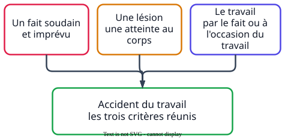

Ce que demandent les sujets
- « Démontrer en quoi la blessure est un accident du travail. »
- « Relever les accidents de la situation et identifier le type de chacun. »
La méthode

À retenir
- Accident du travail
- accident survenu par le fait ou à l'occasion du travail et ayant provoqué une lésion. Il est soudain : c'est le critère le plus souvent oublié.
- Accident de trajet
- accident survenu sur le parcours habituel entre la résidence, le lieu de travail ou le lieu habituel des repas. Un détour pour un motif personnel n'est pas couvert.
- Accident de mission
- accident survenu pendant un déplacement demandé par l'employeur.
- Les démarches
- le salarié informe l'employeur dans les 24 heures ; l'employeur déclare l'accident à la caisse d'assurance maladie dans les 48 heures ; le médecin établit le certificat médical initial.
Un exemple de bac
« Relever les différents accidents présents dans la situation et identifier le type d'accident auquel chacun correspond. »
Sujet 2022, métropole
InsuffisantIl y a des accidents de vélo.
MaîtriséUne chute sur le trajet entre le domicile et le travail est un accident de trajet. Une chute pendant un déplacement vers un rendez-vous à l'extérieur est un accident de mission. Une chute dans l'enceinte de l'entreprise est un accident du travail.
Chaque accident est relevé et son type est nommé. Relever sans identifier le type vaut insuffisant.